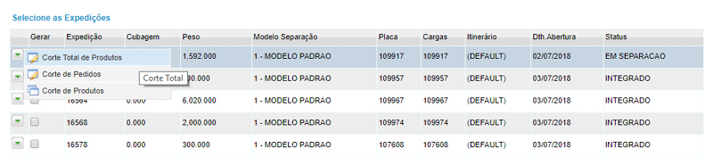

Expedição -> Ressuprimento -> Gerar ressuprimento
Clique no menu EXPEDIÇÃO, posicione o mouse em RESSUPRIMENTO, em seguida clique em GERAR RESSUPRIMENTO .

Na tela seguinte, preencha os campos de filtro e clique em BUSCAR.
Ao posicionar o mouse no início da linha de registro, você tem acesso às seguintes opções:
- Corte total de produtos
- Corte de pedidos
- Corte de produtos

Selecione as ordens de ressuprimento que deseja e clique em GERAR ONDA para finalizar o processo no desktop;